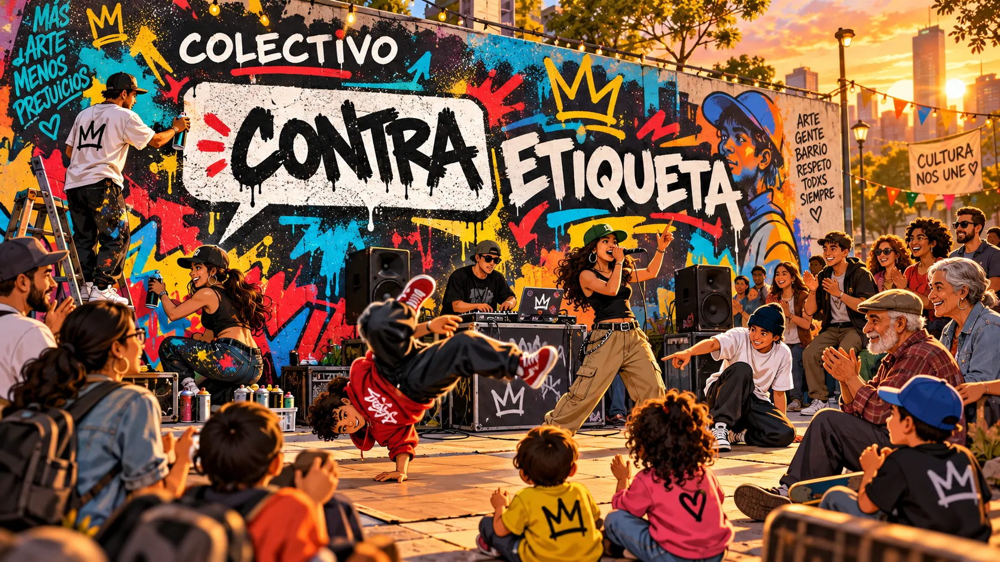

Museo virtual · Memoria colectiva
Un museo que no cabe entre cuatro paredes
Reúne eventos, murales, obras y voces de quienes pintan el territorio. Entra, recorre y sigue el rastro de cada encuentro.
Qué es este lugar
La memoria viva de nuestros encuentros
Este museo reúne las obras, historias y aprendizajes construidos colectivamente. Cada actividad suma nuevas voces, nuevos relatos y nuevas formas de comprender nuestro mundo.
Salas del museo
Eventos para recorrer
Creaciones
Obras que salieron del encuentro
La experiencia interactiva de Narra Muros sigue intacta: un muro circular con las pinturas de quienes participaron.